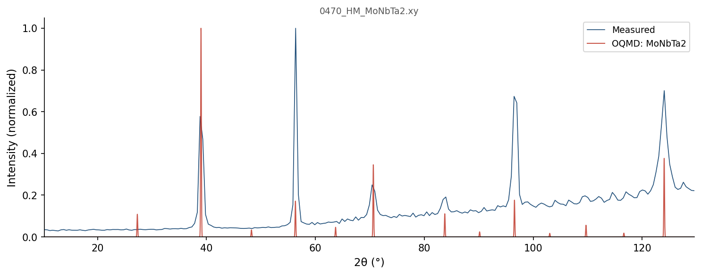

| Element | Expected (mol frac) | Measured (mol frac) | Δ (mol frac) | Δ (%) |
|---|---|---|---|---|
| Mo | 0.2500 | 0.2503 | +0.0003 | +0.03% |
| Nb | 0.2500 | 0.2509 | +0.0009 | +0.09% |
| Ta | 0.5000 | 0.4988 | -0.0012 | -0.12% |
319 entries in the Mo-Nb-Ta element system (26 on hull, 40 ICSD-tagged). Stability in meV/atom. Sorted most stable first.
| Composition | Stability (meV/atom) | ΔE (meV/atom) | ICSD | Space | Entry | CIF |
|---|---|---|---|---|---|---|
Mo1Ta1 |
-19 | -194.4 | ✓ | Mo-Ta | 2036487 | CIF |
Mo2Ta1 |
-19 | -172.7 | Mo-Ta | 1975029 | CIF | |
Mo1Nb1 |
-14 | -116.3 | ✓ | Mo-Nb | 2036479 | CIF |
Mo3Nb5 |
-13 | -100.2 | Mo-Nb | 1986231 | CIF | |
Mo2Nb1 |
-11 | -104.2 | Mo-Nb | 1976423 | CIF | |
Mo1Ta4 |
-3 | -92.5 | Mo-Ta | 2131555 | CIF | |
Mo13Nb3 |
-2 | -64.3 | Mo-Nb | 1339401 | CIF | |
Mo7Ta1 |
-1 | -65.9 | Mo-Ta | 1916311 | CIF | |
Nb1Ta1 |
-1 | -5.4 | Nb-Ta | 2162798 | CIF | |
Mo3Ta5 |
-1 | -163.1 | Mo-Ta | 1975082 | CIF | |
Nb1Ta2 |
-1 | -4.8 | Nb-Ta | 2162766 | CIF | |
Mo7Nb1 |
-1 | -44.4 | Mo-Nb | 1916338 | CIF | |
Mo4Ta7 |
-1 | -159.1 | Mo-Ta | 2131870 | CIF | |
Nb3Ta1 |
+0 | -3.5 | Nb-Ta | 2086148 | CIF | |
Nb3Ta1 |
+0 | -3.5 | Nb-Ta | 2121467 | CIF | |
Mo3Nb2Ta1 |
+0 | -143.3 | Mo-Nb-Ta | 1986483 | CIF | |
Mo3Ta8 |
+0 | -122.4 | Mo-Ta | 2131873 | CIF | |
Mo3Nb2Ta3 |
+0 | -146.1 | Mo-Nb-Ta | 1976543 | CIF | |
Mo2Nb1Ta1 |
+0 | -156.2 | Mo-Nb-Ta | 1991520 | CIF | |
Nb1Ta7 |
+0 | -1.9 | Nb-Ta | 2162789 | CIF | |
Mo15Nb1 |
+0 | -22.3 | Mo-Nb | 2132196 | CIF | |
Mo1 |
+0 | 0.0 | Mo | 1215167 | CIF | |
Nb1 |
+0 | 0.0 | Nb | 1521870 | CIF | |
Nb1 |
+0 | 0.0 | Nb | 1215170 | CIF | |
Nb1 |
+0 | 0.0 | Nb | 1521875 | CIF | |
Ta1 |
+0 | 0.0 | Ta | 1215197 | CIF | |
Nb1 |
+0 | 0.0 | ✓ | Nb | 685533 | CIF |
Mo1Nb1 |
+0 | -116.3 | Mo-Nb | 1339212 | CIF | |
Mo1Nb1 |
+0 | -116.3 | Mo-Nb | 1522223 | CIF | |
Mo1Ta1 |
+0 | -194.4 | Mo-Ta | 1522226 | CIF | |
Mo1Ta1 |
+0 | -194.4 | Mo-Ta | 306083 | CIF | |
Mo1Nb1 |
+0 | -116.2 | Mo-Nb | 306419 | CIF | |
Ta1 |
+0 | 0.1 | Ta | 2162725 | CIF | |
Ta1 |
+0 | 0.1 | Ta | 2162668 | CIF | |
Mo1Ta1 |
+0 | -194.3 | Mo-Ta | 1990193 | CIF | |
Ta1 |
+0 | 0.1 | Ta | 1522225 | CIF | |
Nb1 |
+0 | 0.1 | Nb | 2162724 | CIF | |
Nb1 |
+0 | 0.1 | Nb | 2162619 | CIF | |
Mo1 |
+0 | 0.1 | Mo | 1522085 | CIF | |
Mo1 |
+0 | 0.1 | Mo | 1522090 | CIF | |
Mo7Ta1 |
+0 | -65.8 | Mo-Ta | 2132163 | CIF | |
Nb2Ta1 |
+0 | -4.0 | Nb-Ta | 2162764 | CIF | |
Nb1Ta2 |
+0 | -4.6 | Nb-Ta | 1450365 | CIF | |
Nb8Ta1 |
+0 | -1.4 | Nb-Ta | 1990445 | CIF | |
Mo1Nb1 |
+0 | -116.1 | Mo-Nb | 1991815 | CIF | |
Mo1 |
+0 | 0.3 | ✓ | Mo | 676469 | CIF |
Ta1 |
+0 | 0.3 | ✓ | Ta | 676531 | CIF |
Mo3Nb1 |
+0 | -81.1 | Mo-Nb | 1916188 | CIF | |
Mo8Nb1 |
+0 | -39.0 | Mo-Nb | 1976509 | CIF | |
Mo3Nb1 |
+0 | -80.9 | ✓ | Mo-Nb | 2036482 | CIF |
Nb3Ta2 |
+1 | -4.1 | Nb-Ta | 2162752 | CIF | |
Nb1Ta1 |
+1 | -4.7 | Nb-Ta | 2080473 | CIF | |
Nb2Ta1 |
+1 | -3.3 | Nb-Ta | 2162750 | CIF | |
Nb1Ta3 |
+1 | -2.8 | Nb-Ta | 2086012 | CIF | |
Nb1Ta1 |
+1 | -4.4 | Nb-Ta | 2162790 | CIF | |
Mo3Nb1 |
+1 | -80.2 | Mo-Nb | 311999 | CIF | |
Nb2Ta3 |
+1 | -3.8 | Nb-Ta | 2162747 | CIF | |
Nb3Ta1 |
+1 | -2.2 | Nb-Ta | 2080606 | CIF | |
Nb1Ta1 |
+2 | -3.8 | Nb-Ta | 2085876 | CIF | |
Nb1Ta1 |
+2 | -3.8 | Nb-Ta | 2121545 | CIF | |
Nb3Ta1 |
+2 | -1.8 | Nb-Ta | 2082335 | CIF | |
Nb3Ta1 |
+2 | -1.8 | Nb-Ta | 2082460 | CIF | |
Nb1Ta3 |
+2 | -1.9 | Nb-Ta | 2082310 | CIF | |
Nb1Ta3 |
+2 | -1.9 | Nb-Ta | 2082485 | CIF | |
Nb1Ta2 |
+2 | -2.8 | Nb-Ta | 2162755 | CIF | |
Mo2Nb1Ta1 |
+2 | -154.0 | Mo-Nb-Ta | 449894 | CIF | |
Nb1Ta1 |
+2 | -3.1 | Nb-Ta | 2082160 | CIF | |
Nb1Ta1 |
+2 | -3.1 | Nb-Ta | 2082185 | CIF | |
Ta1 |
+2 | 2.3 | ✓ | Ta | 670903 | CIF |
Nb3Ta1 |
+2 | -1.1 | Nb-Ta | 2162776 | CIF | |
Mo3Nb1 |
+2 | -79.0 | Mo-Nb | 1793442 | CIF | |
Nb1Ta2 |
+3 | -2.2 | Nb-Ta | 1973635 | CIF | |
Ta1 |
+3 | 2.6 | ✓ | Ta | 16591 | CIF |
Ta1 |
+3 | 2.7 | ✓ | Ta | 9754 | CIF |
Ta1 |
+3 | 2.7 | Ta | 1515748 | CIF | |
Ta1 |
+3 | 2.7 | ✓ | Ta | 9755 | CIF |
Nb1Ta4 |
+3 | -0.2 | Nb-Ta | 2131589 | CIF | |
Nb1Ta1 |
+3 | -2.5 | Nb-Ta | 2162778 | CIF | |
Nb1Ta1 |
+3 | -2.5 | Nb-Ta | 2162813 | CIF | |
Nb3Ta2 |
+3 | -1.7 | Nb-Ta | 2162751 | CIF | |
Nb2Ta1 |
+3 | -1.1 | Nb-Ta | 2162814 | CIF | |
Nb1Ta1 |
+3 | -2.2 | Nb-Ta | 2084819 | CIF | |
Nb1Ta1 |
+3 | -2.2 | Nb-Ta | 2121117 | CIF | |
Nb1Ta2 |
+3 | -1.6 | Nb-Ta | 2162728 | CIF | |
Nb1Ta3 |
+3 | -0.3 | Nb-Ta | 2162783 | CIF | |
Nb2Ta3 |
+4 | -1.3 | Nb-Ta | 2162753 | CIF | |
Nb5Ta4 |
+4 | -1.2 | Nb-Ta | 1975086 | CIF | |
Mo8Ta3 |
+4 | -137.7 | Mo-Ta | 2160124 | CIF | |
Mo3Ta1 |
+4 | -125.6 | Mo-Ta | 1375091 | CIF | |
Mo9Ta7 |
+4 | -181.9 | Mo-Ta | 2132120 | CIF | |
Nb3Ta1 |
+5 | 1.1 | Nb-Ta | 314195 | CIF | |
Nb3Ta1 |
+5 | 1.1 | Nb-Ta | 2162729 | CIF | |
Nb3Ta1 |
+5 | 1.3 | ✓ | Nb-Ta | 2036476 | CIF |
Nb1Ta3 |
+6 | 2.3 | Nb-Ta | 2162735 | CIF | |
Nb1Ta3 |
+6 | 2.4 | ✓ | Nb-Ta | 2036478 | CIF |
Nb1Ta3 |
+6 | 2.5 | Nb-Ta | 308969 | CIF | |
Nb1Ta1 |
+6 | 0.7 | Nb-Ta | 1338619 | CIF | |
Nb1Ta1 |
+6 | 0.8 | Nb-Ta | 1338896 | CIF | |
Nb1Ta1 |
+6 | 0.9 | Nb-Ta | 2162797 | CIF | |
Nb1Ta1 |
+6 | 0.9 | Nb-Ta | 1339378 | CIF | |
Nb1Ta1 |
+6 | 0.9 | Nb-Ta | 307535 | CIF | |
Nb1Ta1 |
+6 | 0.9 | Nb-Ta | 1522332 | CIF | |
Nb1Ta1 |
+6 | 0.9 | ✓ | Nb-Ta | 2036475 | CIF |
Mo7Nb9 |
+6 | -101.8 | Mo-Nb | 1339732 | CIF | |
Nb1Ta1 |
+7 | 1.3 | Nb-Ta | 2162775 | CIF | |
Mo7Nb3 |
+7 | -88.3 | Mo-Nb | 2160098 | CIF | |
Nb1Ta1 |
+7 | 1.9 | Nb-Ta | 2162799 | CIF | |
Nb1Ta3 |
+7 | 3.7 | Nb-Ta | 2121028 | CIF | |
Mo6Nb1Ta1 |
+7 | -99.6 | Mo-Nb-Ta | 1639274 | CIF | |
Nb1Ta3 |
+8 | 4.3 | Nb-Ta | 2080742 | CIF | |
Nb1Ta1 |
+9 | 3.7 | Nb-Ta | 2162731 | CIF | |
Nb1Ta1 |
+9 | 3.7 | ✓ | Nb-Ta | 2036477 | CIF |
Nb1Ta1 |
+9 | 3.7 | Nb-Ta | 2082609 | CIF | |
Mo3Nb1 |
+10 | -71.4 | Mo-Nb | 2080519 | CIF | |
Mo3Nb1 |
+10 | -71.4 | Mo-Nb | 2121051 | CIF | |
Mo1Nb1 |
+10 | -105.9 | Mo-Nb | 337961 | CIF | |
Mo11Nb3Ta2 |
+11 | -113.6 | Mo-Nb-Ta | 2154004 | CIF | |
Mo10Nb3Ta3 |
+11 | -134.7 | Mo-Nb-Ta | 2155572 | CIF | |
Mo3Ta1 |
+11 | -118.6 | ✓ | Mo-Ta | 2036490 | CIF |
Mo3Ta1 |
+11 | -118.5 | Mo-Ta | 1916187 | CIF | |
Nb1Ta1 |
+13 | 7.1 | Nb-Ta | 339077 | CIF | |
Mo3Ta1 |
+13 | -117.3 | Mo-Ta | 311317 | CIF | |
Mo7Ta3 |
+14 | -142.0 | Mo-Ta | 2131829 | CIF | |
Mo1Ta1 |
+14 | -180.8 | Mo-Ta | 337625 | CIF | |
Mo3Nb1 |
+14 | -67.2 | Mo-Nb | 2086136 | CIF | |
Mo3Nb1 |
+14 | -67.2 | Mo-Nb | 2121458 | CIF | |
Mo3Nb1 |
+14 | -66.9 | Mo-Nb | 2082306 | CIF | |
Mo3Nb1 |
+14 | -66.9 | Mo-Nb | 2082447 | CIF | |
Mo1Nb3 |
+17 | -50.2 | ✓ | Mo-Nb | 2036480 | CIF |
Mo1Nb3 |
+17 | -50.2 | Mo-Nb | 310226 | CIF | |
Mo3Ta1 |
+19 | -110.9 | Mo-Ta | 2121074 | CIF | |
Mo3Ta1 |
+19 | -110.9 | Mo-Ta | 2080600 | CIF | |
Mo1Nb3 |
+20 | -46.9 | Mo-Nb | 2086000 | CIF | |
Mo1Nb3 |
+20 | -46.9 | Mo-Nb | 2121368 | CIF | |
Mo1Nb3 |
+21 | -45.5 | Mo-Nb | 2080655 | CIF | |
Mo1Nb3 |
+22 | -45.1 | Mo-Nb | 2082456 | CIF | |
Mo1Nb3 |
+22 | -45.1 | Mo-Nb | 2082297 | CIF | |
Mo3Ta1 |
+28 | -102.1 | Mo-Ta | 2082451 | CIF | |
Mo3Ta1 |
+28 | -102.1 | Mo-Ta | 2082334 | CIF | |
Mo3Ta1 |
+29 | -101.1 | Mo-Ta | 2121462 | CIF | |
Mo3Ta1 |
+29 | -101.1 | Mo-Ta | 2086140 | CIF | |
Mo1Nb1Ta2 |
+30 | -80.6 | Mo-Nb-Ta | 531780 | CIF | |
Mo1Nb1 |
+30 | -86.4 | Mo-Nb | 2080442 | CIF | |
Ta1 |
+31 | 31.4 | ✓ | Ta | 2030257 | CIF |
Ta1 |
+32 | 31.6 | Ta | 1280388 | CIF | |
Ta1 |
+32 | 31.6 | Ta | 1215019 | CIF | |
Mo1Nb2Ta1 |
+33 | -64.1 | ✓ | Mo-Nb-Ta | 2036517 | CIF |
Mo1Nb2Ta1 |
+33 | -64.0 | Mo-Nb-Ta | 1127182 | CIF | |
Mo1Nb1 |
+37 | -79.4 | Mo-Nb | 2082156 | CIF | |
Mo1Nb1 |
+37 | -79.4 | Mo-Nb | 2082147 | CIF | |
Mo1Nb1 |
+38 | -78.1 | Mo-Nb | 2085864 | CIF | |
Mo1Nb1 |
+39 | -77.5 | Mo-Nb | 2082597 | CIF | |
Mo1Nb1 |
+39 | -77.5 | ✓ | Mo-Nb | 2036481 | CIF |
Mo1Ta3 |
+39 | -73.9 | Mo-Ta | 2086004 | CIF | |
Mo1Ta3 |
+39 | -73.9 | Mo-Ta | 2121371 | CIF | |
Mo1Ta3 |
+41 | -72.5 | Mo-Ta | 2080736 | CIF | |
Mo1Ta3 |
+43 | -69.7 | Mo-Ta | 2082301 | CIF | |
Mo1Ta3 |
+43 | -69.7 | Mo-Ta | 2082484 | CIF | |
Mo1Ta3 |
+44 | -68.7 | ✓ | Mo-Ta | 2036488 | CIF |
Mo1Ta3 |
+45 | -68.2 | Mo-Ta | 314119 | CIF | |
Mo1Nb1Ta1 |
+55 | -74.6 | Mo-Nb-Ta | 2085585 | CIF | |
Mo1Nb1Ta2 |
+58 | -52.6 | Mo-Nb-Ta | 1127566 | CIF | |
Mo1Nb1Ta2 |
+58 | -52.6 | ✓ | Mo-Nb-Ta | 2036518 | CIF |
Mo1Nb2Ta1 |
+58 | -39.6 | Mo-Nb-Ta | 488098 | CIF | |
Mo1Ta1 |
+60 | -133.9 | Mo-Ta | 2080472 | CIF | |
Mo1Nb1 |
+63 | -53.6 | Mo-Nb | 2121114 | CIF | |
Mo1Nb1 |
+63 | -53.6 | Mo-Nb | 2084807 | CIF | |
Mo2Nb1Ta1 |
+70 | -86.7 | ✓ | Mo-Nb-Ta | 2036519 | CIF |
Mo1Ta1 |
+71 | -123.1 | Mo-Ta | 2082184 | CIF | |
Mo1Ta1 |
+71 | -123.1 | Mo-Ta | 2082151 | CIF | |
Nb1 |
+76 | 75.9 | Nb | 1215883 | CIF | |
Mo1Ta1 |
+79 | -115.6 | Mo-Ta | 2085868 | CIF | |
Mo1Ta1 |
+79 | -115.6 | Mo-Ta | 2121541 | CIF | |
Ta1 |
+88 | 88.2 | Ta | 1577325 | CIF | |
Ta1 |
+88 | 88.3 | Ta | 1214841 | CIF | |
Mo1 |
+95 | 94.5 | Mo | 1280332 | CIF | |
Mo1 |
+95 | 94.5 | Mo | 1214989 | CIF | |
Ta1 |
+100 | 100.5 | Ta | 1485545 | CIF | |
Mo1Ta1 |
+103 | -91.6 | Mo-Ta | 2082601 | CIF | |
Mo1Ta1 |
+103 | -91.5 | ✓ | Mo-Ta | 2036489 | CIF |
Nb1 |
+105 | 105.0 | Nb | 1214992 | CIF | |
Nb1 |
+105 | 105.0 | Nb | 1280310 | CIF | |
Ta1 |
+109 | 108.8 | Ta | 1484597 | CIF | |
Ta1 |
+109 | 109.3 | Ta | 1487640 | CIF | |
Ta1 |
+111 | 111.0 | Ta | 1215910 | CIF | |
Ta1 |
+117 | 116.5 | Ta | 1485143 | CIF | |
Mo1Ta1 |
+121 | -73.8 | Mo-Ta | 2084811 | CIF | |
Mo1 |
+124 | 123.6 | Mo | 1215880 | CIF | |
Nb2Ta1 |
+135 | 130.8 | Nb-Ta | 1609964 | CIF | |
Nb1Ta2 |
+135 | 130.5 | Nb-Ta | 1609955 | CIF | |
Nb2Ta1 |
+138 | 133.6 | Nb-Ta | 1592045 | CIF | |
Nb2Ta1 |
+139 | 134.5 | Nb-Ta | 1610054 | CIF | |
Nb7Ta6 |
+141 | 136.4 | Nb-Ta | 1454675 | CIF | |
Ta1 |
+142 | 142.1 | Ta | 1214930 | CIF | |
Mo1Nb1Ta1 |
+143 | 12.7 | Mo-Nb-Ta | 1523223 | CIF | |
Mo1Nb1Ta1 |
+143 | 13.0 | Mo-Nb-Ta | 1523509 | CIF | |
Nb6Ta7 |
+144 | 139.1 | Nb-Ta | 1454677 | CIF | |
Nb1 |
+145 | 144.9 | ✓ | Nb | 2030157 | CIF |
Nb1Ta2 |
+145 | 140.4 | Nb-Ta | 1610045 | CIF | |
Nb1 |
+147 | 147.2 | Nb | 1215705 | CIF | |
Nb3Ta1 |
+154 | 150.3 | Nb-Ta | 303653 | CIF | |
Nb1Ta2 |
+155 | 150.3 | Nb-Ta | 1594360 | CIF | |
Nb1Ta3 |
+166 | 162.5 | Nb-Ta | 298433 | CIF | |
Ta1 |
+166 | 166.3 | ✓ | Ta | 2030158 | CIF |
Nb1 |
+167 | 166.6 | Nb | 1214814 | CIF | |
Ta1 |
+167 | 167.0 | Ta | 1484950 | CIF | |
Ta1 |
+168 | 168.1 | Ta | 1215732 | CIF | |
Nb1 |
+174 | 173.6 | ✓ | Nb | 2030113 | CIF |
Nb1 |
+198 | 197.7 | Nb | 1215259 | CIF | |
Mo2Nb1 |
+202 | 97.4 | Mo-Nb | 1592092 | CIF | |
Nb1 |
+202 | 202.0 | Nb | 1801139 | CIF | |
Nb1 |
+202 | 202.1 | ✓ | Nb | 2031499 | CIF |
Ta1 |
+207 | 206.8 | Ta | 1215286 | CIF | |
Mo2Nb1 |
+210 | 106.1 | Mo-Nb | 1610044 | CIF | |
Nb1 |
+213 | 213.0 | Nb | 1214903 | CIF | |
Mo1Nb3 |
+219 | 152.1 | Mo-Nb | 299684 | CIF | |
Mo2Ta1 |
+221 | 48.2 | Mo-Ta | 1592122 | CIF | |
Mo2Nb1 |
+224 | 119.6 | Mo-Nb | 1609954 | CIF | |
Ta1 |
+226 | 225.7 | ✓ | Ta | 2030259 | CIF |
Mo2Ta1 |
+230 | 57.2 | Mo-Ta | 1610053 | CIF | |
Mo2Ta1 |
+241 | 68.5 | Mo-Ta | 1609963 | CIF | |
Ta1 |
+242 | 242.3 | ✓ | Ta | 7517 | CIF |
Ta1 |
+242 | 242.4 | Ta | 1214574 | CIF | |
Mo1Ta3 |
+253 | 139.6 | Mo-Ta | 303577 | CIF | |
Ta1 |
+254 | 253.5 | Ta | 1215465 | CIF | |
Ta1 |
+261 | 260.8 | Ta | 1214663 | CIF | |
Mo1 |
+268 | 267.8 | Mo | 1214811 | CIF | |
Nb1 |
+268 | 268.4 | Nb | 1214636 | CIF | |
Ta1 |
+270 | 269.7 | Ta | 1216091 | CIF | |
Nb1Ta3 |
+270 | 266.3 | Nb-Ta | 349223 | CIF | |
Ta1 |
+280 | 280.2 | ✓ | Ta | 2030258 | CIF |
Ta1 |
+280 | 280.4 | Ta | 1215375 | CIF | |
Nb1Ta3 |
+290 | 286.3 | Nb-Ta | 324737 | CIF | |
Nb1Ta1 |
+290 | 284.7 | Nb-Ta | 2083275 | CIF | |
Nb1 |
+291 | 291.4 | Nb | 1215438 | CIF | |
Nb1 |
+293 | 293.0 | Nb | 1216064 | CIF | |
Mo1Nb1 |
+294 | 177.5 | Mo-Nb | 2083263 | CIF | |
Nb1Ta1 |
+295 | 289.1 | Nb-Ta | 1230492 | CIF | |
Nb1 |
+296 | 296.2 | ✓ | Nb | 2029911 | CIF |
Nb1Ta1 |
+297 | 291.7 | Nb-Ta | 328619 | CIF | |
Nb1 |
+297 | 297.4 | Nb | 1215348 | CIF | |
Nb3Ta1 |
+298 | 294.5 | Nb-Ta | 319511 | CIF | |
Mo1 |
+308 | 307.7 | Mo | 1214900 | CIF | |
Nb3Ta1 |
+310 | 306.3 | Nb-Ta | 343997 | CIF | |
Mo1Ta1 |
+321 | 126.3 | Mo-Ta | 2083267 | CIF | |
Nb1 |
+322 | 321.8 | Nb | 1214547 | CIF | |
Nb1 |
+322 | 321.8 | ✓ | Nb | 676151 | CIF |
Nb1 |
+324 | 323.6 | Nb | 1215794 | CIF | |
Mo3Nb1 |
+325 | 243.6 | Mo-Nb | 301457 | CIF | |
Mo1 |
+330 | 329.9 | ✓ | Mo | 2030156 | CIF |
Mo1 |
+334 | 334.1 | Mo | 1215702 | CIF | |
Mo3Ta1 |
+341 | 211.1 | Mo-Ta | 300775 | CIF | |
Nb1 |
+344 | 343.7 | Nb | 1215081 | CIF | |
Mo1 |
+362 | 362.4 | Mo | 1215256 | CIF | |
Mo1 |
+366 | 366.0 | Mo | 1214633 | CIF | |
Mo1Nb1 |
+382 | 265.6 | Mo-Nb | 327503 | CIF | |
Mo1Nb3 |
+397 | 330.2 | Mo-Nb | 322541 | CIF | |
Mo1 |
+406 | 405.7 | ✓ | Mo | 2031498 | CIF |
Mo1Ta3 |
+407 | 294.1 | Mo-Ta | 346345 | CIF | |
Mo1Ta3 |
+411 | 298.2 | Mo-Ta | 321859 | CIF | |
Ta1 |
+413 | 412.8 | Ta | 1215108 | CIF | |
Mo1 |
+416 | 415.6 | ✓ | Mo | 676152 | CIF |
Mo1 |
+416 | 416.0 | Mo | 1214544 | CIF | |
Ta1 |
+417 | 417.0 | Ta | 1215821 | CIF | |
Mo1Ta1 |
+421 | 226.3 | Mo-Ta | 327167 | CIF | |
Mo1 |
+421 | 420.8 | ✓ | Mo | 2030243 | CIF |
Mo1 |
+422 | 422.1 | Mo | 1215435 | CIF | |
Mo1 |
+429 | 429.0 | Mo | 1216061 | CIF | |
Mo1 |
+433 | 433.4 | ✓ | Mo | 2030388 | CIF |
Mo1 |
+434 | 434.3 | Mo | 1215345 | CIF | |
Mo1Nb1 |
+438 | 322.2 | Mo-Nb | 1243628 | CIF | |
Mo1Nb3 |
+440 | 373.0 | Mo-Nb | 347027 | CIF | |
Nb1 |
+442 | 442.5 | Nb | 1214725 | CIF | |
Mo1 |
+458 | 458.0 | Mo | 1215791 | CIF | |
Mo3Nb1 |
+483 | 401.4 | Mo-Nb | 320768 | CIF | |
Mo3Ta1 |
+498 | 368.4 | Mo-Ta | 324661 | CIF | |
Mo3Nb1 |
+506 | 424.3 | Mo-Nb | 345254 | CIF | |
Mo1Nb1 |
+510 | 394.1 | Mo-Nb | 1230343 | CIF | |
Mo1Nb2 |
+514 | 425.0 | Mo-Nb | 1592015 | CIF | |
Mo3Ta1 |
+522 | 391.9 | Mo-Ta | 349147 | CIF | |
Mo1Nb2 |
+526 | 437.2 | Mo-Nb | 1610035 | CIF | |
Ta1 |
+529 | 529.0 | Ta | 1214752 | CIF | |
Mo1Nb2 |
+531 | 442.3 | Mo-Nb | 1609945 | CIF | |
Mo1Ta2 |
+535 | 388.4 | Mo-Ta | 1576974 | CIF | |
Mo1 |
+543 | 542.9 | Mo | 1215078 | CIF | |
Mo1Ta2 |
+547 | 400.0 | Mo-Ta | 1610036 | CIF | |
Mo1Ta2 |
+558 | 411.4 | Mo-Ta | 1609946 | CIF | |
Mo1Ta1 |
+577 | 382.3 | Mo-Ta | 1230369 | CIF | |
Nb1 |
+601 | 601.3 | Nb | 1215616 | CIF | |
Mo1Nb2 |
+742 | 653.3 | Mo-Nb | 1415519 | CIF | |
Ta1 |
+758 | 757.6 | Ta | 1215643 | CIF | |
Mo1Nb1Ta1 |
+769 | 639.0 | Mo-Nb-Ta | 884482 | CIF | |
Mo1Ta2 |
+769 | 622.5 | Mo-Ta | 1416580 | CIF | |
Mo1 |
+835 | 835.0 | Mo | 1215613 | CIF | |
Mo1Nb1 |
+930 | 814.2 | Mo-Nb | 1243627 | CIF | |
Mo1 |
+937 | 937.0 | Mo | 1214722 | CIF | |
Ta1 |
+948 | 947.9 | ✓ | Ta | 9753 | CIF |
Ta1 |
+948 | 948.4 | ✓ | Ta | 52302 | CIF |
Nb1Ta1 |
+1061 | 1055.4 | Nb-Ta | 1106720 | CIF | |
Mo1Nb1Ta1 |
+1066 | 935.9 | Mo-Nb-Ta | 962878 | CIF | |
Mo1Nb1Ta1 |
+1084 | 954.1 | Mo-Nb-Ta | 919199 | CIF | |
Mo1Nb1 |
+1110 | 993.4 | Mo-Nb | 1105604 | CIF | |
Mo2Nb1 |
+1185 | 1080.7 | Mo-Nb | 1415518 | CIF | |
Mo1Ta1 |
+1197 | 1002.2 | Mo-Ta | 1105268 | CIF | |
Ta1 |
+1210 | 1210.2 | ✓ | Ta | 9752 | CIF |
Mo2Ta1 |
+1218 | 1045.6 | Mo-Ta | 1416579 | CIF | |
Mo1 |
+1303 | 1302.7 | Mo | 1215969 | CIF | |
Nb1 |
+1385 | 1385.1 | Nb | 1215972 | CIF | |
Ta1 |
+1653 | 1653.4 | Ta | 1215999 | CIF | |
Mo1 |
+2237 | 2237.3 | Mo | 1215524 | CIF | |
Mo1Nb1 |
+2482 | 2365.6 | Mo-Nb | 1223372 | CIF | |
Nb1 |
+2545 | 2544.7 | Nb | 1215527 | CIF | |
Mo1Ta1 |
+2653 | 2459.0 | Mo-Ta | 1223398 | CIF | |
Nb1Ta1 |
+2721 | 2715.7 | Nb-Ta | 1223521 | CIF | |
Ta1 |
+2881 | 2880.9 | Ta | 1215554 | CIF | |
Mo1Nb2 |
+3439 | 3350.3 | Mo-Nb | 1236875 | CIF | |
Nb2Ta1 |
+3711 | 3706.8 | Nb-Ta | 1238022 | CIF | |
Mo2Nb1 |
+3831 | 3727.1 | Mo-Nb | 1236876 | CIF | |
Nb1Ta2 |
+3840 | 3835.7 | Nb-Ta | 1238021 | CIF |

Nb0.37Ta0.63
| Tc = 5.31 K
| 10.1143/JPSJ.25.1307
112 known superconductor(s) in the MoNbTa2 element system. Sorted by Tc descending. ■ closest composition
| Compound | Formula | Tc (K) | Reference |
|---|---|---|---|
| Nb | Nb1 |
9.71 | 10.1103/PhysRevB.72.064503 |
| Nb | Nb1 |
9.47 | 10.1103/PhysRevB.72.064503 |
| Nb | Nb1 |
9.40 | Search |
| Nb | Nb1 |
9.40 | Search |
| Nb | Nb1 |
9.27 | 10.1103/PhysRevB.9.108 |
| Nb | Nb1 |
9.25 | 10.1103/PhysRev.149.231 |
| Nb1-xOx | Nb99.976O0.024 |
9.23 | 10.1103/PhysRevB.9.888 |
| Nb | Nb1 |
9.23 | Search |
| Nb1-xTax | Nb0.995Ta0.005 |
9.23 | 10.1103/PhysRevB.9.108 |
| Nb | Nb1 |
9.21 | 10.1103/PhysRev.176.562 |
| Nb | Nb1 |
9.20 | 10.1103/PhysRevLett.79.4262 |
| Nb | Nb1 |
9.20 | 10.1103/PhysRev.123.1569 |
| Nb | Nb1 |
9.20 | 10.1143/JPSJ.22.238 |
| Nb | Nb1 |
9.18 | Search |
| Nb | Nb1 |
9.16 | Search |
| Nb | Nb1 |
9.10 | Search |
| Nb | Nb1 |
9.09 | 10.1103/PhysRevB.72.064503 |
| Nb1-xTax | Nb0.99Ta0.01 |
9.08 | 10.1103/PhysRevB.9.108 |
| Nb1-xOx | Nb99.861O0.139 |
9.03 | 10.1103/PhysRevB.9.888 |
| Nb1-xTax | Nb0.98Ta0.02 |
9.02 | Search |
| Nb0.991Ta0.009 | Nb0.991Ta0.009 |
8.87 | Search |
| Nb1-xTax | Nb0.96Ta0.04 |
8.87 | Search |
| Nb | Nb1 |
8.81 | 10.1103/PhysRevB.72.064503 |
| Nb | Nb1 |
8.80 | Search |
| Nb0.984Ta0.016 | Nb0.984Ta0.016 |
8.76 | Search |
| Nb1-xTax | Nb0.94Ta0.06 |
8.76 | Search |
| Mo0.02Nb0.98 | Mo0.02Nb0.98 |
8.58 | Search |
| Nb1-xMox | Mo0.02Nb0.98 |
8.58 | Search |
| Nb0.957Ta0.043 | Nb0.957Ta0.043 |
8.55 | Search |
| Nb1-xOx | Nb99.445O0.555 |
8.50 | 10.1103/PhysRevB.9.888 |
| Nb0.938Ta0.062 | Nb0.938Ta0.062 |
8.42 | Search |
| Nb1-xTax | Nb0.9Ta0.1 |
8.40 | Search |
| Nb1-xMox | Mo0.02Nb0.98 |
8.24 | 10.1103/PhysRev.123.1569 |
| Nb0.87Ta0.13 | Nb0.87Ta0.13 |
8.15 | 10.1143/JPSJ.25.1307 |
| Nb1-xOx | Nb99.078O0.922 |
8.10 | 10.1103/PhysRevB.9.888 |
| Nb1-xTax | Nb0.85Ta0.15 |
8.08 | Search |
| Mo0.05Nb0.95 | Mo0.05Nb0.95 |
8.00 | 10.1103/PhysRev.158.340 |
| Nb | Nb1 |
7.95 | 10.1103/PhysRevB.72.064503 |
| Nb0.803Ta0.197 | Nb0.803Ta0.197 |
7.85 | Search |
| Nb1-xOx | Nb98.68O1.32 |
7.85 | 10.1103/PhysRevB.9.888 |
| Nb1-xTax | Nb0.8Ta0.2 |
7.82 | 10.1103/PhysRev.123.1569 |
| Nb1-xMox | Mo0.05Nb0.95 |
7.63 | 10.1103/PhysRev.123.1569 |
| Nb1-xTax | Nb0.8Ta0.2 |
7.42 | Search |
| Nb1-xOx | Nb98O2 |
7.33 | 10.1103/PhysRevB.9.888 |
| Mo3O5 | Mo3O5 |
7.20 | Search |
| Nb1-xTax | Nb0.7Ta0.3 |
7.17 | Search |
| Nb | Nb1 |
7.13 | 10.1103/PhysRevB.72.064503 |
| Nb1-xTax | Nb0.63Ta0.37 |
6.84 | 10.1103/PhysRev.123.1569 |
| Nb0.64Ta0.36 | Nb0.64Ta0.36 |
6.80 | Search |
| Nb1-xTax | Nb0.7Ta0.3 |
6.80 | Search |
| Nb1-xMox | Mo0.1Nb0.9 |
6.72 | 10.1103/PhysRev.123.1569 |
| Nb1-xTax | Nb0.6Ta0.4 |
6.56 | Search |
| Ta1-xNbx | Nb0.58Ta0.42 |
6.54 | 10.1103/PhysRevB.6.2609 |
| Mo0.1Nb0.9 | Mo0.1Nb0.9 |
6.38 | 10.1103/PhysRev.173.504 |
| Nb0.5Ta0.5 | Nb0.5Ta0.5 |
6.25 | 10.1103/PhysRev.140.A1169 |
| Nb0.47Ta0.53 | Nb0.47Ta0.53 |
6.20 | Search |
| Nb1-xOx | Nb96.5O3.5 |
6.13 | 10.1103/PhysRevB.9.888 |
| Nb1-xTax | Nb0.5Ta0.5 |
5.93 | Search |
| (Nb,Mo) | Mo0.15Nb0.85 |
5.85 | 10.1103/PhysRevLett.28.681 |
| Ta1-xNbx | Nb0.405Ta0.595 |
5.72 | 10.1103/PhysRevB.6.2609 |
| Nb1-xTax | Nb0.4Ta0.6 |
5.54 | 10.1103/PhysRev.123.1569 |
| Ta1-xNbx | Nb0.4Ta0.6 |
5.40 | Search |
| Nb0.37Ta0.63 | Nb0.37Ta0.63 |
5.31 | 10.1143/JPSJ.25.1307 |
| Mo0.15Nb0.85 | Mo0.15Nb0.85 |
5.30 | Search |
| Nb1-xMox | Mo0.15Nb0.85 |
5.30 | Search |
| Nb1-xTax | Nb0.3Ta0.7 |
5.15 | Search |
| Nb0.92Ta0.71 | Nb0.92Ta0.71 |
4.94 | 10.1143/JPSJ.25.1307 |
| Ta1-xNbx | Nb0.14Ta0.86 |
4.76 | 10.1103/PhysRevB.6.2609 |
| Ta1-xNbx | Nb0.16Ta0.84 |
4.67 | 10.1143/JPSJ.29.1209 |
| Nb0.17Ta0.83 | Nb0.17Ta0.83 |
4.65 | 10.1143/JPSJ.25.1307 |
| Nb0.2Ta0.8 | Nb0.2Ta0.8 |
4.64 | Search |
| Ta1-xNbx | Nb0.2Ta0.8 |
4.64 | Search |
| Nb1-xTax | Nb0.15Ta0.85 |
4.58 | Search |
| Nb1-xMox | Mo0.2Nb0.8 |
4.57 | 10.1103/PhysRev.123.1569 |
| Ta1-xNbx | Nb0.1Ta0.9 |
4.55 | Search |
| Ta1-xNbx | Nb0.08Ta0.92 |
4.54 | 10.1143/JPSJ.29.1209 |
| Ta1-xNbx | Nb0.037Ta0.963 |
4.51 | 10.1103/PhysRevB.6.2609 |
| Ta | Ta1 |
4.48 | 10.1143/JPSJ.29.1209 |
| Ta | Ta1 |
4.48 | Search |
| Ta1-xNbx | Nb0.016Ta0.984 |
4.47 | 10.1143/JPSJ.29.1209 |
| Ta1-xNbx | Nb0.04Ta0.96 |
4.47 | 10.1143/JPSJ.29.1209 |
| Nb0.025Ta0.975 | Nb0.025Ta0.975 |
4.46 | 10.1143/JPSJ.29.1209 |
| Ta1-xNbx | Nb0.025Ta0.975 |
4.46 | 10.1143/JPSJ.29.1209 |
| Ta1 | Ta1 |
4.46 | 10.1143/JPSJ.28.380 |
| Ta | Ta1 |
4.46 | 10.1143/JPSJ.28.380 |
| Ta1-xNbx | Nb0.05Ta0.95 |
4.45 | Search |
| Ta | Ta1 |
4.43 | Search |
| Ta | Ta1 |
4.42 | 10.1103/PhysRevB.6.2609 |
| Ta | Ta1 |
4.42 | 10.1103/PhysRev.123.1569 |
| Ta | Ta1 |
4.40 | 10.1103/PhysRevLett.79.4262 |
| Ta | Ta1 |
4.33 | Search |
| Ta | Ta1 |
4.31 | Search |
| Ta | Ta1 |
4.30 | 10.1103/PhysRev.112.31 |
| Mo0.2Nb0.8 | Mo0.2Nb0.8 |
4.23 | Search |
| Nb1-xMox | Mo0.2Nb0.8 |
4.23 | Search |
| Hf1-xTax | Ta1 |
4.21 | Search |
| Mo0.25Nb0.75 | Mo0.25Nb0.75 |
3.47 | Search |
| (Nb,Mo) | Mo0.25Nb0.75 |
3.47 | Search |
| Nb1-xMox | Mo0.3Nb0.7 |
2.67 | 10.1103/PhysRev.123.1569 |
| Nb1-xMox | Mo0.3Nb0.7 |
2.48 | 10.1103/PhysRev.130.2177 |
| Nb1O1 | Nb1O1 |
1.50 | Search |
| O1b1 | Nb1O1 |
1.39 | Search |
| Nb1O1 | Nb1O1 |
1.25 | Search |
| Mo | Mo1 |
0.92 | Search |
| Mo | Mo1 |
0.92 | Search |
| Mo | Mo1 |
0.92 | 10.1103/PhysRev.129.1025 |
| Mo1 | Mo1 |
0.92 | Search |
| Mo | Mo1 |
0.90 | Search |
| Mo0.4Nb0.6 | Mo0.4Nb0.6 |
0.60 | Search |
| (Nb,Mo) | Mo0.4Nb0.6 |
0.60 | 10.1103/PhysRevLett.28.681 |
| (Nb,Mo) | Mo0.8Nb0.2 |
0.10 | 10.1103/PhysRevLett.28.681 |
| Mo0.7Nb0.3 | Mo0.7Nb0.3 |
0.02 | 10.1103/PhysRevLett.11.6 |